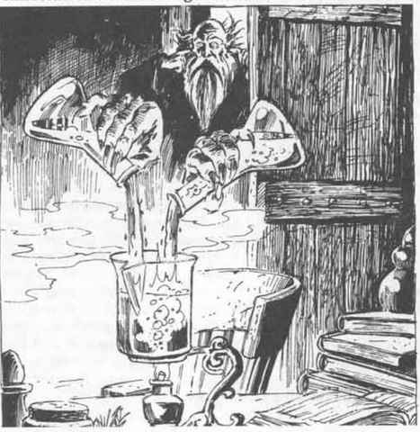
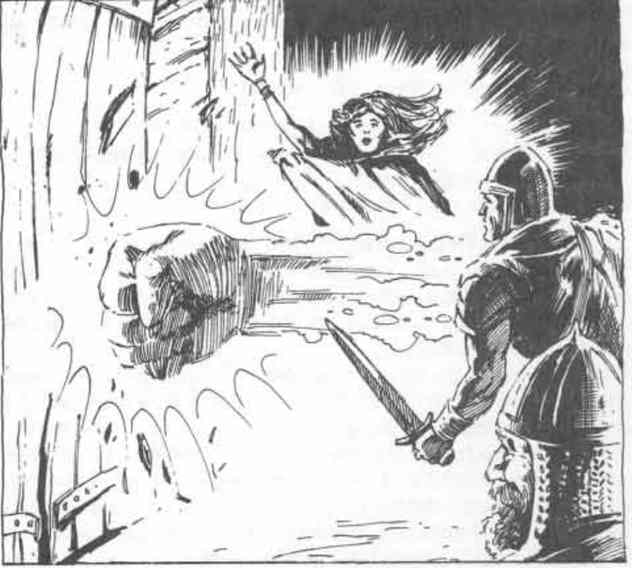

比格比的法术 · Bigby’s Spells
毕格比的书虫灾厄术（塑能系）
解释／描述： 此法术用于搜寻并消灭法师最为恐惧的敌人之一：书虫。施法时，法术会创造出一只无身躯的手，它将搜索一座图书馆，并压碎它找到的所有书虫。这只手每轮可以搜索 100 本书或卷轴，以 95% 的发现几率寻找书虫。一旦找到一只书虫，这只手便会不懈地追逐它，并以等同于施法者等级的战士技能进行攻击。这只手成功命中，意味着书虫会被立即压死。这只手的力量为 8，因此它可以在追逐逃跑的书虫时移开书籍和卷轴。这只手不会受到物理攻击伤害，但遭受 4 点或更多魔法伤害时会被摧毁。这只手无法执行任何其他功能，也不能与任何其他敌人战斗。Bigby 会定期使用此法术来保护他珍贵的图书馆。材料成分是一只用坚韧皮革制成的儿童尺寸手套。
毕格比的感觉手指术（塑能系）
解释／描述： 此法术会在施法者的指挥下召唤出一只无身躯的手。这只手不能握持、抓取或搬运，但确实拥有惊人敏锐的触觉。这只手的触觉精细到可以注意到表面上的微小裂缝、分隔处或开口，因此有 50% 的几率发现秘密门或隐藏门。这只手每轮可以搜索一个 10 英尺乘 10 英尺的区域。这只手不会被物理攻击摧毁，但遭受 4 点或更多魔法伤害时会被驱散。如果陷阱位置已知，这只手可以触发非魔法陷阱。法术的材料成分是一只儿童尺寸的丝绸手套和一根天鹅羽毛。
毕格比的灵巧手指术（塑能系）

解释／描述： 此法术会召唤出一对无身躯的手，它们会遵从法师的每一道命令。这些手可以执行隐形仆从的所有功能，也能完成要求精细协调的工作，例如摆弄工具、操作实验室设备、雕刻、绘画或演奏乐器。这些手可以完成施法者能够完成的任何任务，包括法师所知的非武器熟练项。这些手的灵巧度等同于施法者。每只手可以单独握持和搬运最多 200 金币重量，合计可以搬运 500 金币重量。这些手彼此之间不能分开得超过施法者双手之间的距离。这些手无论搬运的重量为何，每轮都能移动 120 英尺，但它们离施法者不能超过 90 英尺，否则就会消失。这些手不能完成法术的姿势成分。这些手不能在近战中使用武器，也不能拳击或擒抱。虽然这些手免疫物理攻击，但遭受 6 点或更多魔法伤害时会被摧毁。材料成分是一双绣有法师姓名首字母的手套。
毕格比的缄默之手术（塑能系－附魔系）
解释／描述： 此法术会创造出一只大小恰当的手，它将飞向选定的生物，并紧紧捂住该生物的嘴，除非该生物通过豁免检定。受此法术影响的生物将无法清楚说话，不能施放需要言语成分的任何法术，也不能使用由可听见的命令词触发的魔法物品。这只手无法从生物嘴上被拉开，也不会受到物理攻击伤害，但遭受 6 点或更多魔法伤害时会被摧毁，尽管大多数魔法攻击都有伤害受影响生物的风险。成功的解除魔法会在不伤害生物的情况下摧毁这只手。材料成分是一只涂有黏稠糖浆或蜂蜜的布手套。
毕格比的好斗拳士术（塑能系）
解释／描述： 此法术会创造出一对真人大小的手，外形如握紧的、加衬垫的拳头。这双手以力量 18／50 的战士一半施法者经验等级的战斗效能进行捶打。这双手合起来以护甲等级 4、每法师等级 3 点生命值的角色进行战斗。这双手在耗尽生命值时会被驱散。这双手只能捶打，不能握持武器或擒抱，也不能进行摔绊，因为它们可以轻易挣脱。材料成分是一只填塞棉花、并带有黄铜铃的连指手套。
毕格比的破门铁拳术（塑能系）
解释／描述： 此法术会创造出一股闪烁的紫色力量，其形状像一根攻城槌，握紧的拳头就是槌头。这股力量呈圆柱形，长 12 英尺、直径 2 英尺，但施法者可以将其长度缩短到 3 英尺，以便放入狭窄空间。
此法术发挥出强力攻城槌的作用：普通门一击摧毁，加固门三击摧毁，石门五击摧毁；对金属门则有 50% 的几率摧毁（如果铁拳失败，法术会被摧毁）。每轮只能进行一次攻击，就像普通攻城槌一样。将其用于更小的实体障碍物，例如地下城门或用魔法加固的金属栅门时，门必须在施法者施放加固法术的等级上进行豁免检定。如果豁免成功，铁拳法术会被摧毁。如果豁免失败，铁拳法术便开始作用于门。
对活着的目标，攻城槌不起作用。施法者必须始终处于攻城槌 60 英尺以内，否则它会消散。攻城槌不会受到物理攻击伤害，但若遭受相当于施法者生命值一半的魔法伤害，便会被摧毁。解除魔法或解离术也能摧毁铁拳。此法术不能用于打开箱子，也不能撞击门以外的任何物体。它只对设计成可以在某个时候打开的门户起作用。材料成分是一根金属棒，一端套着一只链甲手套。
毕格比的施工队术（塑能系）
解释／描述： 此法术会创造出与施法者经验等级数量相同的手，每只手都配备木工工具。这些手所做的工作，相当于一支由专业木匠、石匠、矿工或工兵组成的同等能力施工队。它们永远不需要休息或进食。每一对手作为一名工人工作。它们无法战斗，也不能对任何东西造成物理伤害。它们不会被非魔法手段摧毁，每一对手拥有的生命值等同于施法者的等级。材料成分包括一套微型工具，价值至少 500 金币。
毕格比的力量雕塑术（塑能系）
解释／描述： 这个非常灵活的法术能让法师创造出一个可见的力场平面，并将其塑造成施法者希望的任何形状。例如，施法者可以创造桌子、梯子、棍棒、水桶、高跷或手杖。一旦物体成形，它会在法术持续时间内保持形状。被仿制的物体必须相当坚硬，不能有活动部件，不能有尖锐的点或边，也不能具有精细的细节。绳子、长弓、剑、战车或精确的雕像都不能用此法术创造。所有由力量形成的物体都不会受到物理攻击伤害，但遭受的魔法攻击伤害点数超过创造者生命值时，会被魔法攻击驱散。每个施法者等级最多可以仿制 1 立方英尺的物质。法术材料成分是一团混入钻石尘的软黏土。
毕格比的奇绝剑士术（塑能系）
解释／描述： 此法术会为施法者的每三个等级创造一只手，每只手都握着一把长剑。每只手以施法者一半经验等级的战士技能进行战斗。由于体型小且速度快，每只手的护甲等级为 2；每只手在被驱散前可以承受 15 点伤害。每个剑士都有能力解除对手的武装，并且会在命中所需骰值再高出 4 点时这样做。被解除武装、失去剑的剑士会自动被驱散。施法者不需要集中精神来维持剑士运作，只需像对待侍从一样向它们下达命令即可。材料成分是一枚小型银制护符，形状像一只戴着铠甲的手握住一把镶宝石的剑，价值至少 1,000 金币（法术施放时护符会消失）。
毕格比的高级力量雕塑术（塑能系）
解释／描述： 此法术是 4 级力量雕塑术的更高级形式。由力量形成的物体可以更复杂，可以由大型活动部件组成，也可以有边或尖端，但仍必须相当坚硬。马车、箭袋、铲子、剑或水车都可以仿制，但机械钟表、弩或弹簧不能仿制。如果施法者拥有工匠或雕刻家的足够技能，也可以将精细细节制作进物体。制作精细细节需要 2d4 轮，但会在法术持续时间内保留。每个施法者等级最多可以仿制 8 立方英尺的物质。高级力量雕塑术的持续时间也比力量雕塑术更长。除此之外，高级力量雕塑术与 4 级同类法术完全相同。材料成分是一团混入钻石尘的黏土。
毕格比的绞杀之握术（塑能系）
解释／描述： 此法术会创造出一双无身躯的手，它们会寻找生物的喉咙，并以与绞索攻击相同的效果勒住生物。双手必须成功进行攻击检定才能抓住生物的喉咙；由于攻击速度和凶猛程度，它们在法师通常的攻击骰上获得 +4 命中加值。除非生物挣脱双手，否则绞杀之握会在下一轮结束前将受害者勒死。受害者可以通过一次成功的弯杠开门检定挣脱握力。如果法师的集中被打断，握力也会松开。此法术能够影响哪些生物，其限制与普通绞索的使用限制相同。材料成分是一双缝制成围绕瓶颈抓握形状的手套。
毕格比的围城弩矢术（塑能系）
解释／描述： 此法术类似于魔法飞弹。施法时，法师能够每两个施法者等级发射一枚魔法攻城弩矢。弩矢在射程和效果上会表现得像某种给定的攻城器械投射物。弩矢模仿哪一种攻城器械投射物，取决于施法者的等级。
| 魔法师等级 | 模仿的攻城器械投射物 |
|---|---|
| 12 级 | 轻型投石机 |
| 14 级 | 重型投石机 |
| 16 级 | 配重投石机 |
在接下来的轮次中，弩矢必须以每两轮一枚的速度发射。在此期间，施法者不能做其他事情。如果法术被打断，就不能再发射额外的弩矢。弩矢会无误地击中目标。材料成分是一块撒有钻石尘的小石头。
毕格比的至高力量雕塑术（塑能系）

解释／描述： 此法术是力量雕塑法术中最先进的形式。形成的物体可以高度复杂，包含许多活动部件，例如攻城器械或帆船。所仿制物体的部件可以像绳子或弓的木材一样柔韧，因此可以形成大型网、弩炮、绳桥或一组弩。与较低级的力量雕塑术一样，精细或准确的细节需要额外 2d4 轮来成形，同时还需要艺术家或工匠的足够技能。每个施法者等级最多可以仿制 1 立方码的物质。除上述例外外，此法术与同类 4 级法术完全相同。材料成分是一团混入价值 1,000 金币钻石尘的黏土，法术使用时会消失。